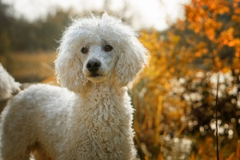
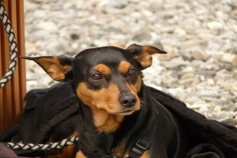
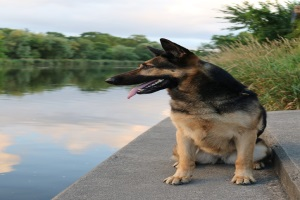

Raças
Pug
Os pugs são animais de origem chinesa, que apesar da pequena estatura podem atingir 8kg. É uma raça que não tem o costume de latir. São dóceis, ótimos para crianças e idosos,
e para serem criados em apartamento. Aprendem comandos básicos com uma certa facilidade. São animais sensíveis ao calor e soltam muito pelo.
O formato achatado do focinho dos pugs dificulta a respiração, que é ofegante. Em função disso, não suportam ficar em locais fechados por muito tempo, podendo até
desenvolver problemas respiratórios.

Poodle
O poodle é uma raça que teve origem na Alemanha. Seu tamanho varia desde os toys até os classificados como standard, que podem chegar a 32kg em média. Na maioria das vezes
são animais dóceis. São bem brincalhões e inteligentes. São ágeis nas atividades físicas e adaptam-se muito bem em ambientes pequenos como apartamentos, por exemplo.
Não necessitam de grande quantidade de atividades físicas. São carinhosos com o dono e pessoas conhecidas. Possuem o instinto de caça, podendo perseguir roedores,
pássaros e outros animais de porte pequeno. Gostam e precisam muito de companhia, principalmente do dono, além de serem extremamente criativos em suas atitudes.

Pinscher
Apesar de ser considerada raça de pequeno porte, o pinscher, que teve origem na Alemanha, é considerado cão de guarda. São ousados, corajosos, curiosos e apegados.
São cães leais e inteligentes. Os pinschers adaptam-se facilmente em ambientes pequenos como apartamentos, por exemplo. Costumam comer acima das necessidades,
tendência para a obesidade. Sem treinamento e socialização, esta raça pode tornar-se agressiva.
Golden
O labrador é considerado um cão de grande porte, podendo atingir 45Kg. São animais extremamente inteligentes e de fácil treinamento, sendo a principal raça utilizada
como cão-guia de pessoas cegas. Apesar de muitos serem criados em apartamentos, são animais de grande disposição, precisando de áreas para correr ou para praticar
natação. Não são solitários, portanto, necessitam da companhia dos membros da família. São ótimos para crianças e idosos quando bem educados.

Pastor Alemão
De origem alemã, os pastores são animais de porte grande, podendo atingir até 45kg. Eram muito utilizados em casas como cães de guarda. Apesar disso, hoje em dia são mais
utilizados como cães policiais, por serem de fácil aprendizado e ótimo olfato. São muito ágeis, rápidos e espertos. Na maioria das vezes são muito carinhosos
com seus donos, sendo ótimos também para companhia. Eles latem com frequência.